1과목: 교통계획
1. 교통수요관리방안(TDM)으로 적합하지 않은 것은?
2. P요소법에 대한 설명으로 틀린 것은?
3. 단기교통계획에 비하여 장기교통계획이 갖는 특징으로 옳은 것은?
4. 폐쇄선 설정 시 고려할 사항이 아닌 것은?
5. 현재 교통망의 문제 지점 또는 지역을 진단하고 도로의 시설, 확장 등 교통시설 건설사업의 타당성과 우선순위 등을 결정하는데 가장 중요한 근거가 되는 것은?
6. 교통대안의 경제성 분석 시 고려할 요소로 가장 거리가 먼 것은?
7. 다음 중 통행분포(Trip Distribution)단계에 사용하는 모형은?
8. 교통의 공간적 분류에서 국가교통의 교통체계에 해당하지 않는 것은?
9. 승용차(A)와 버스(B)의 효용함수 값이 각각 VA = -5.545, VB = -4.874 일 때, 로짓모형에 의한 두 수단의 선택확률이 모두 옳은 것은?
10. 지하철 요금과 승객 수요 간의 수요탄력성이 -1.5 이다. 지하철 요금이 1200원으로 인상될 경우 승객 수요는 어떻게 변하는가? (단, 현재 지하철 요금은 1000원, 승객 수요는 10만명이다.)
11. 중력모형(Gravity Model)의 특징으로 틀린 것은?
12. 과거추세연장법에 의한 교통수요 예측에 대한 설명으로 틀린 것은?
13. 대중교통의 일반적인 특성으로 틀린 것은?
14. 1970년대 초 새티(Satty)에 의해 개발된 의사결정법으로 의사결정의 목표나 평가 기준이 다양하고 다수이며 복잡한 경우에 상호연계성이 적은 배타적 대안을 체계적으로 평가할 수 있는 것은?
15. 교통계획을 위한 현황자료 조사에서 인구, 소득, 자동차 보유대수, 직업별 고용자수, 학생수 등 사회경제지표의 주요 용도로 가장 거리가 먼 것은?
16. 교통존(Zone)의 설정 시 고려할 사항으로 틀린 것은?
17. 개별행태모형에 대한 설명으로 틀린 것은?
18. 내부수익률(IRR)을 이용한 경제성 분석법에 대한 설명으로 옳은 것은?
19. 화물교통조사의 내용이 아닌 것은?
20. 대중교통수단의 여러 가지 비용에 대한 아래 그림에서 ㉠, ㉡, ㉢의 내용이 모두 옳은 것은?
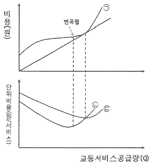
2과목: 교통공학
21. 다음 중 고속도로 엇갈림구간(Weaving Area)의 교통특성에 영향을 미치는 도로 기하구조 요소에 해당하지 않는 것은?
22. 어느 교통류는 속도와 밀도가 u=40.0-0.25k의 관계를 가진다. 이 교통류의 임계밀도, 임계속도, 용량은 얼마인가?
23. 다음 중에서 일방통행제의 단점인 것은?
24. 도시부 2차로 국도에서 평균지점속도조사를 계획하고자 한다. 95% 신뢰수준에서 허용오차를 2km/h가 되게 할 때 필요한 표본수는? (단, 도시부 2차로 국도에서 지점속도의 표준편차는 7.7km/h, 95% 신뢰수준 계수 값은 1.96으로 한다.)
25. 다음 중 감응식 신호에 대한 설명이 옳지 않은 것은?
26. 어느 신호교차로에서 다음 표와 같이 15분 간격으로 두 시간 동안 교통량 조사를 실시하였다. 이 신호교차로의 첨두시간계수(PHF)는?
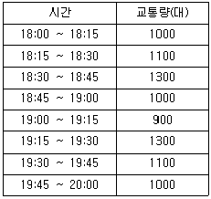
27. 기종점 조사의 분석결과에 대한 정확성 검토를 위하여 일반적으로 많이 사용되는 조사방법은?
28. 외부로부터의 자극에 대한 운전자의 반응에 관한 PIEV이론에서 I에 해당하는 것은?
29. 다음 중 나머지 세 가지와 의미가 다른 하나는?
30. 20/20의 시력을 가진 운전자가 80m의 거리에서 글자의 크기가 15cm인 교통표지판을 읽을 수 있다면 20/50의 시력을 가진 운전자가 글자크기가 동일한 표지판을 읽기 위해 필요한 거리는?
31. 3km의 도로구간을 주행한 차량 3대의 주행속도와 시간이 아래와 같을 때, 3대의 공간평균속도는 얼마인가?
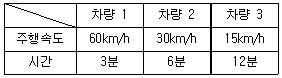
32. 도로의 한 지점에서 루프검지기를 사용하면 밀도를 직접 측정할 수 없다. 이를 대신하기 위하여 측정하는 변수는?
33. 신호교차로에서 주기를 결정할 때 고려해야 할 요소가 아닌 것은?
34. 다음 중 지점속도(spot speed)의 조사를 통하여 분석할 수 없는 것은?
35. 다음의 교통신호와 관련된 용어에 대한 설명으로 옳지 않은 것은?
36. 주기가 100초이며 4현시로 운영되는 신호교차로가 있다. 동서도로의 직진 및 좌회전의 황색신호 3.0초, 남북도로의 직진 및 좌회전의 황색신호는 4.0초이다. 이 교차로의 한시간당 유효녹색시간은 얼마인가? (단, 모든 도로의 출발지연시간 0.2초, 소거손실시간 0.1초이다.)
37. 도로교통용량 산정의 변수 중 중차량 보정계수공식으로 맞는 것은? (단, Pt : 화물차의 구성비율, Pb : 버스의 구성비율, Et : 화물차의 승용차 환산계수, Eb : 버스의 승용차 환산계수)
38. 고속도로 기본구간의 이상적인 조건에 해당하지 않는 것은?
39. 다음 중 교통량(q), 교통밀도(k), 공간평균속도(v)의 관계식으로 옳은 것은?
40. 다음 중 대기행렬이론에서의 단일 서비스시스템에 대한 설명으로 옳지 않은 것은?
3과목: 교통시설
41. 평면교차로에서 좌회전 차로를 설치하고자 할 때 차로 테이퍼에 관한 설명으로 옳지 않은 것은?
42. 등화를 횡으로 배열한 4색 신호등의 배열순서는?
43. 다음은 비상주차대의 설치위치에 대한 내용이다. ( )에 들어갈 내용을 순서대로 나열한 것은?
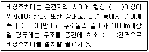
44. 클로버형 인터체인지의 특징으로 볼 수 없는 것은?
45. 도로의 차로수를 결정하는 요인으로 옳지 않은 것은?
46. 도로의 횡단구성 요소 중 차도부에 해당하지 않는 것은 무엇인가?
47. 버스의 운행정보가 아래와 같을 때, 다음 중 최적재차인원에 의한 버스 정류장의 적정 간격은?
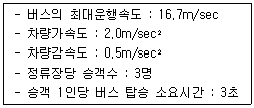
48. 도로의 표시에서 황색실선에 대한 설명 중 옳지 않은 것은?
49. 도로의 설계속도에 따른 차도의 최소 평면곡선반지름으로 옳은 것은? (단, 편경사가 6%인 경우이다.)
50. 다음 중 평면교차로 설계의 기본원리로 옳지 않은 것은?
51. 설계속도가 80km/h인 평지도로에서 노면과 타이어의 종방향 마찰계수가 0.27일 때, 최소정지시거는? (단, 운전자 반응시간은 2.5초 이다.)
52. 휴게시설을 설치할 때, 모든 휴게시설 상호간의 표준 배치간격은?
53. 평면교차로의 종류가 아닌 것은?
54. 다음 중 자전거도로에 대한 설명으로 옳지 않은 것은?
55. 어느 주차장의 주차첨두시간 동안의 주차수요는 98대, 평균주차시간은 1.32시간으로 추정된다. 주차첨두시간의 평균점유율을 0.85로 할 때 소요 주차면수는? (단, 주차첨두시간은 11:00 ~ 14:00 이다.)
56. 비신호 교차로의 경우 좌회전 차로의 대기차량을 위한 길이의 기준으로 옳은 것은?
57. 다음 중 입체교차의 연결로 설계 시 유출입 유형을 일관성 있게 계획할 때의 장점으로 가장 거리가 먼 것은?
58. 다음 중 도로의 최소 곡선반경(R)을 구하는 식으로 바른 것은? (단, f=마찰계수, e=편경사, V=설계속도)
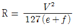
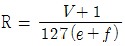
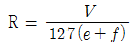
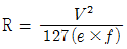
59. 다음 중 도로설계시 환경시설대의 설치기준에 맞는 것은?
60. 도시고속도로의 중앙분리대 설치 시 최소 폭은?
4과목: 도시계획개론
61. 다음 중 근린주구를 물리적 계획의 기본단위로 하여 주구 내의 생활안정을 유지하고 편리성과 쾌적성을 확보하기 위한 6가지 계획원리를 제시한 사람은?
62. 다음 중 보행자전용도로에 대한 설명으로 옳지 않은 것은?
63. 다음 중 도시의 확산현상과 가장 관계가 먼 것은?
64. 현재 인구 150만의 도시가 있다. 연평균 증가율이 4% 일 때, 등차급수에 의한 5년 후의 추정인구는?
65. 다음 중 공동구의 설치 목적과 거리가 먼 것은?
66. 다음의 도시계획역사에 관한 서술 중 사실과 가장 다른 것은?
67. 다음 중 지역의 경제활동 예측모형인 경제기반모형에 대한 설명으로 옳은 것은?
68. 다음 중 국토의 계획 및 이용에 관한 법률상 원칙적으로 관할 구역에 대한 도시ㆍ군기본계획의 수립권자는?
69. 다음은 일반적인 계획과정의 행위 목록이다. 계획과정을 계획단계별로 올바르게 열거한 것은?
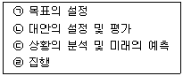
70. 다음의 도로의 기능 분류에서 근린주구생활권의 골격을 형성하는 도로는?
71. 다음 중 도시ㆍ군계획시설의 결정ㆍ구조 및 설치기준에 관한 규칙에 따른 교통시설로서 도로의 종류에 대한 설명으로 옳지 않은 것은?
72. 다음 중 도시ㆍ군관리계획으로 반드시 결정할 사항과 가장 거리가 먼 것은?
73. 다음 중 도시계획 과정에서의 주민참여에 대한 설명으로 옳지 않은 것은?
74. 광역도시계획의 내용과 가장 거리가 먼 것은?
75. 다음 중 도시교통의 특성과 거리가 먼 내용은?
76. 다음 중 국토의 계획 및 이용에 관한 법률상 도시지역과 그 주변지역의 무질서한 시가화를 방지하고, 계획적ㆍ단계적인 개발을 도모할 필요가 있다고 인정되어 도시ㆍ군관리계획으로 결정하는 구역은?
77. 도시의 공간구조론 중 동심원 이론을 발표한 학자는?
78. 용도지구에서 고도지구를 지정하는 이유는?
79. 환지방식에 의한 도시개발사업을 시행할 경우, 일정한 토지를 환지로 정하지 아니하고 보류지로 정하여 그 중 일부를 체비지로 정하는 가장 직접적인 목적은?
80. 토지이용계획에 있어서 순밀도에 대한 설명으로 맞는 것은?
5과목: 교통관계법규
81. 주차장법에 따른 기계식주차장치의 안전기준으로 틀린 것은?
82. 도시교통정비 기본계획을 수립할 때 주차장의 건설 및 운영에 관한 계획에 포함될 사항이 아닌 것은?
83. 주차장법령상 “주차전용건축물”이라 함은 건축물의 연면적 중 주차장으로 사용되는 부분의 비율 기준이 얼마 이상인 것을 말하는가?
84. 도로굴착에 관한 사항을 심의ㆍ조정하기 위하여 설치하는 도로관리심의회에 대한 설명 중 틀린 것은?
85. 도시교통정비촉진법에 의한 연차별 시행계획에 포함되지 않는 것은?
86. 다음 중 주차금지 장소의 기준으로 옳은 것은?
87. 다음 중 국토교통부장관이 도시교통정비지역으로 지정ㆍ고시할 수 있는 대상 지역 기준은?
88. 국토교통부장관은 복합환승센터의 체계적인 개발을 촉진하기 위하여 복합환승센터 개발 기본계획을 국가교통위원회의 심의를 거쳐 수립하여야 하는데 이때 수립주기로 옳은 것은?
89. 부설주차장의 설치대상 시설물이 숙박시설인 경우 부설주차장 설치기준은?
90. 복합환승센터 개발계획의 평가지표가 아닌 것은?
91. 다음 중 도로를 횡단하는 보행자나 통행하는 차마의 안전을 위하여 안전표지나 이와 비슷한 인공구조물로 표시한 도로의 부분을 뜻하는 용어는?
92. 도로관리청은 그 소관 도로의 장기적인 정비방향을 제시하는 도로정비 기본계획을 몇 년 단위로 수립하여야 하는가?
93. 다음 중 도로법에 따른 “도로의 부속물”에 해당하지 않는 것은?
94. 운행상의 안전기준 중 화물차의 적재용량에 관한 설명으로 틀린 것은?
95. 공공기관의 장이 소관 업무를 수행하기 위해 국가통합교통체계효율화법에서 규정한 교통조사를 시행할 때, 국토교통부 장관에게 통보하여야 하는 날은 조사 완료 후 며칠 이내인가?
96. 도로교통법상 교통안전 표지 중 어린이 보호표지는 어린이 보호지점 또는 구역의 어느 정도 전에 설치하도록 규정하고 있는가?
97. 주의표지 중 교차로표지의 설치 기준에 대한 설명으로 옳은 것은?
98. 다음 빈칸에 들어갈 말로 옳은 것은?
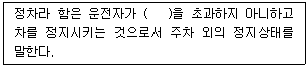
99. 도로교통법에서 정의하고 있는 고속도로의 개념으로 옳은 것은?
100. 도로교통법상 자동차의 안전거리란?
6과목: 교통안전
101. 다음의 교통안전대책 중 안전과 이동성이 상충되는 것은?
102. 교통사고 유발요인의 분류와 이에 속하는 요인이 잘못 짝지어진 것은?
103. 교통사고의 노출도(Exposure rate)를 설명하는 변수로 일반적으로 활용되지 않는 것은?
104. 도로표지의 설치장소 선택 시 고려할 내용으로 가장 거리가 먼 것은?
1⑤. OECD가 요약한 교통안전의 진보단계 중 “모든 사고에 있어 특정 사건은 부분적으로 그에 앞선 행동 또는 환경의 결과다.”라는 전제하에 도로외상을 유발하는 과정을 통하여 결정적인 선 또는 경로를 찾는 방법을 개발하고자 한 것은?
106. 교통안전 전략으로써 노출통제에 해당하는 것은?
107. 승용차가 3% 경사의 오르막길에서 급제동하였더니 제동거리 20m로 정차하였다. 이 차량의 급제동 직전의 속도는 약 얼마인가?(단, 노면과 타이어간의 마찰계수는 0.7 이다.)
108. 어느 차량이 급정지할 때 운전자의 핸들 조향에 의해 측방으로 쏠리면서 도로 위에 미끄러져 요마크(Yawmark)를 형성하였다. 도로는 평지이고 타이어와 노면의 횡방향 마찰계수는 0.3, 요마크의 곡선반경이 100m 일 때, 차량이 미끄러질 때의 속도는 약 얼마인가?
109. 노변방호책의 설계시 고려사항이 아닌 것은?
110. 도로안전진단(Road Safety Audit)에 대한 설명이 틀린 것은?
111. 위험지점의 선정 방법 중 사고율법(Accident Rate Method)의 적용에 필요하지 않은 자료는?
112. 사고지점도에 관한 설명으로 틀린 것은?
113. 구간거리가 12km이고 편도 4차로인 고속도로에서 1년간 사망사고 3건, 부상사고 12건, 대물피해사고가 20건이 발생하였다. 이 구간의 일평균교통량이 20000대일 때 교통사고 피해정도에 의한 사고율은 얼마인가? (단, 사고 유형별 환산계수는 사망사고 = 20, 부상사고 = 5, 대물피해사고 = 1 로 한다.)
114. 교통안전개선사업에 대한 사후 평가의 목적으로 가장 거리가 먼 것은?
115. 운전자들에게 필요한 정보를 올바른 방법으로 제공하여 운전자들이 충돌을 피할 수 있게 해야 한다는 개념의 Positive Guidance의 주요 고려 개념 중 하나인 운전자의 기대심리에 대한 설명이 틀린 것은?
116. 각 지점의 사고율을 산정하고, 그 지점의 사고율이 유사한 조건을 갖는 도로에 대한 사고율보다 현저히 높은지의 여부를 검토하기 위한 분석방법은?
117. 선형불량이 원인이 된 사고의 개선 대책이 아닌 것은?
118. 도로교통조건과 사고에 대한 설명이 틀린 것은?
119. 교통사고 에방과 피해 감소를 위한 각종 대책으로 대별 되어지는 3E에 해당하지 않는 분야는?
120. 35km의 도로 구간에서 1년 동안 50건의 교통사고가 발생하였다. 일평균교통량이 6000대, 총 사고건수 중 5%가 치명적 사고이었다면 차량 1억대ㆍkm당 치명적 사고 발생률은?